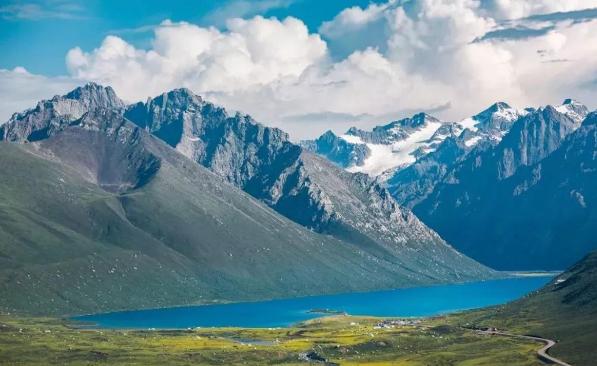
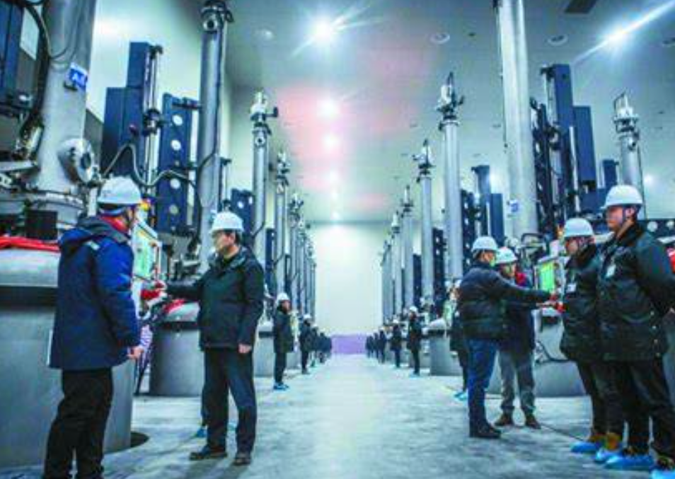
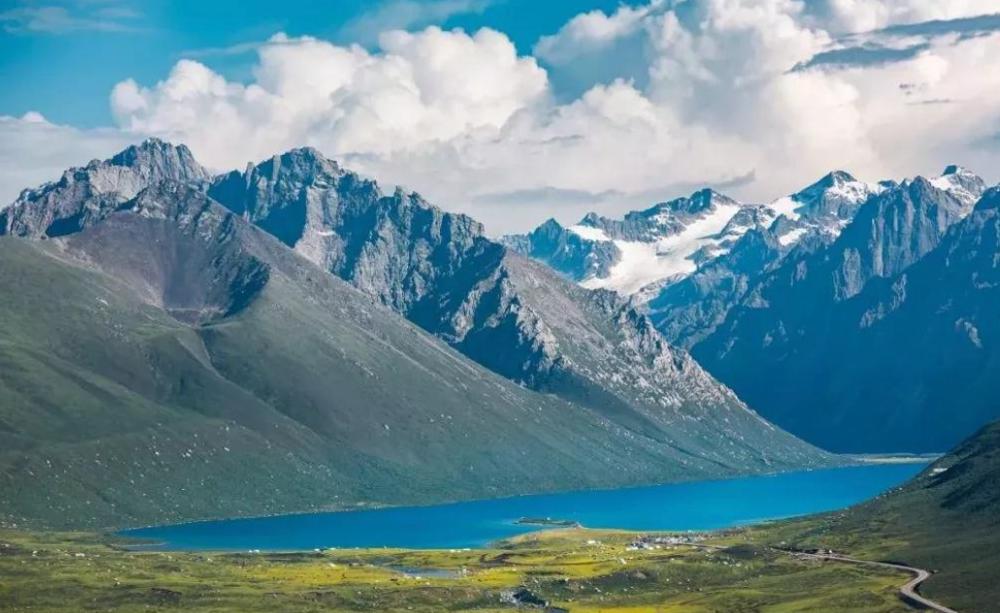
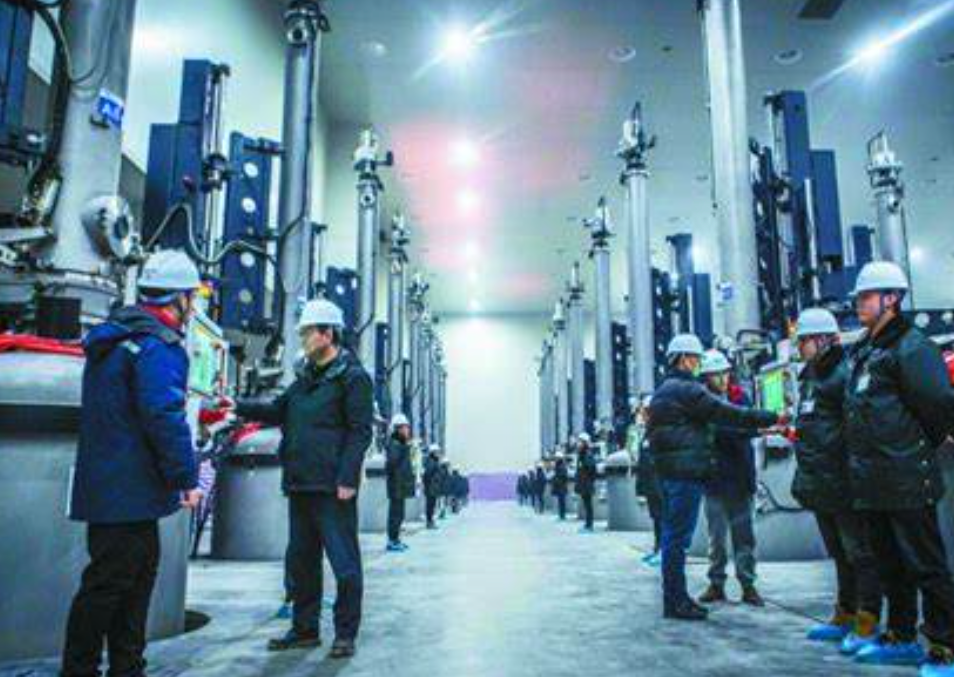
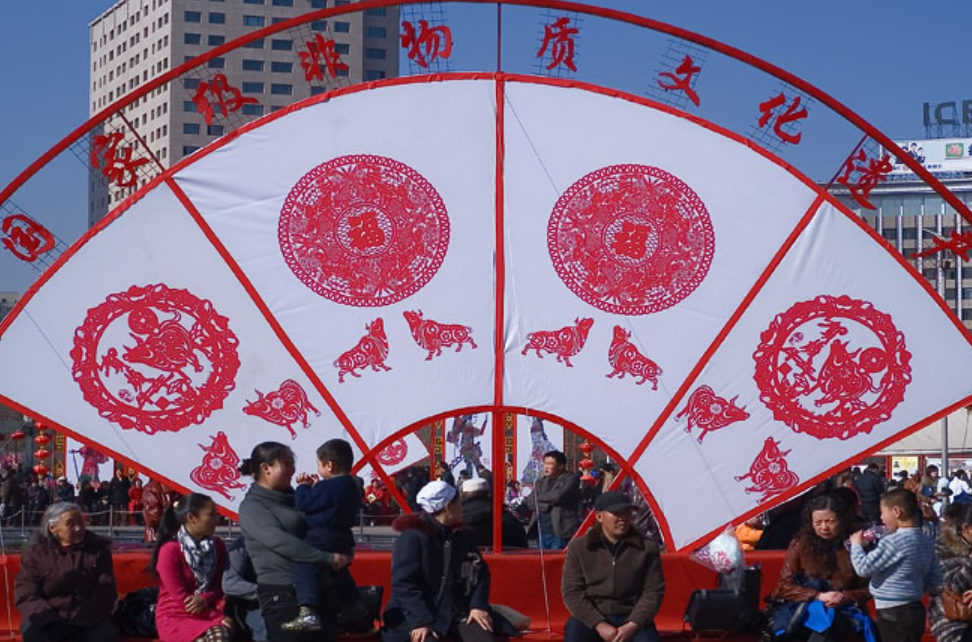
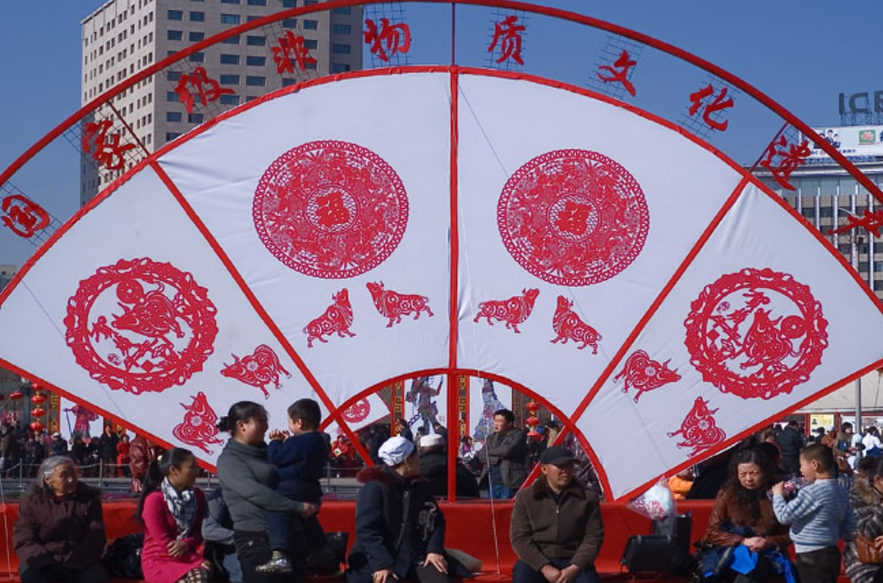

 

青海的旅游资源
青海的旅游资源丰富多样，凭借其独特的自然景观和深厚的文化底蕴，吸引了大量游客。青海的旅游资源主要体现在以下几个方面： 自然景观： 青海湖：作为中国最大的咸水湖，青海湖因其壮丽的湖泊景观和丰富的鸟类生态而闻名。每年夏季，成群的候鸟栖息于湖泊周围，成为游客观光的热点。 祁连山：被誉为“天然的绿宝石”，祁连山拥有辽阔的草原、雪山、森林和丰富的动植物资源，是登山、徒步和摄影爱好者的天堂。 塔尔寺：位于青海省西宁市，是藏传佛教的圣地之一，以其精美的建筑、壁画和文化遗产吸引着无数宗教和文化游客。 柴达木盆地：这个独特的地质地貌区域以戈壁、沙漠和盐湖为特色，丰富的自然景观和独特的地质结构使其成为探险旅游的好去处。 民族文化旅游： 青海是多民族聚居的地区，藏族、回族、土族等不同民族的传统文化为青海的旅游增色不少。游客可以体验藏族的民俗、宗教仪式和节庆活动，如藏历新年、雪顿节等，品尝当地的传统美食，购买特色手工艺品。 生态旅游： 青海致力于生态旅游的发展，结合其丰富的自然资源，推行可持续发展的旅游模式。生态保护区和自然保护区的建设，使得青海的旅游资源不仅吸引游客，也兼顾了环境保护。 总的来说，青海的旅游资源集自然美景与文化魅力于一体，正逐步发展成为中国西部重要的旅游目的地。
青海湖
青海湖是中国最大的咸水湖，位于青海省的东北部，海拔约3200米，面积达4500平方公里，是一个集自然景观、生态保护和文化底蕴于一体的著名旅游胜地。青海湖被誉为“高原明珠”，以其壮丽的湖泊景观和丰富的生物资源吸引着大量游客。 青海湖的自然景观尤为迷人，湖水湛蓝，四周被群山环抱，湖畔草原辽阔，每到夏季，成群的候鸟栖息于湖区，尤其是丹顶鹤、藏羚羊等珍稀物种，使青海湖成为生态旅游和鸟类观察的理想之地。每年春秋季节，成群的牧民和游客骑马、骑行、露营，享受青湖的自然魅力。 青海湖周围还有丰富的人文资源，尤其是藏传佛教文化的痕迹。在湖区周围，有多座藏传佛教寺庙，如青海湖东岸的塔尔寺，吸引着不少宗教信徒与游客前来朝圣和参拜。 青海湖也是环湖骑行的热门线路，每年吸引大量自行车爱好者和摄影师前来挑战和拍摄，成为青海省重要的旅游资源之一。总的来说，青海湖的自然美景和文化魅力相结合，是青海旅游的核心亮点之一。。
茶卡盐湖
茶卡盐湖位于青海省海西蒙古族藏族自治州，是一个以盐湖为主题的独特旅游景点，被誉为“天空之镜”。茶卡盐湖因其湖面如镜、反射天空的景象而闻名，是摄影爱好者的天堂。 茶卡盐湖的总面积约为100平方公里，湖面平坦，湖水含盐量极高，因此湖面呈现出一种耀眼的白色，犹如雪地一般。湖中的盐层厚重，走在盐湖的表面，可以看到白色的盐晶层，宛如冰雪覆盖的世界，尤其在日出和日落时，湖面与天空的倒影形成美丽的视觉效果，给游客带来无与伦比的视觉震撼。 茶卡盐湖是一个盐矿丰富的地区，历史上，湖中的盐曾是当地重要的经济资源。如今，茶卡盐湖不仅是青海的自然景观之一，还是一个集自然美景与人文背景于一体的旅游胜地。游客可以在湖区漫步，拍照留念，还能乘坐小火车游览盐湖，体验盐湖的独特魅力。 此外，茶卡盐湖周围的自然环境也非常独特，周围是广袤的草原和雪山，风景如画，尤其适合进行徒步、骑行等户外活动。茶卡盐湖的美景、纯净的空气以及宁静的氛围，使它成为青海省旅游的重要目的地之一。 总之，茶卡盐湖凭借其独特的自然景观和丰富的旅游资源，已经成为青海旅游的一张亮丽名片。。